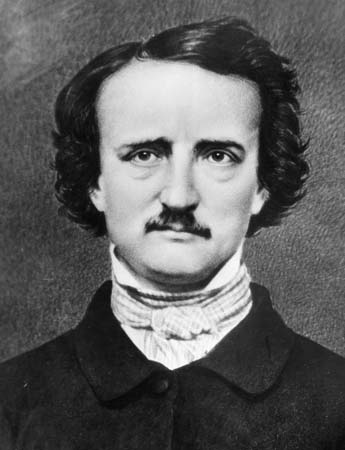

Edgar Allan Poe

Poe was born on January 19, 1809 in Boston Massachesetts and passed away on October 7, 1849. Poe published many poems and stories before he passed away. In total, Poe wrote (at least) 73 short stories and 53 poems. His most famous works are The Raven, The Fall of the House of Usher, and The Tell-Take Heart. My personal favorite is Cupid and Psyche
Emily Dickinson
Dickinson was born on December 10, 1830 in Amherst, Massachusetts and passed away on May 15, 1886. Most of Dickinson's poems weren't published until her sister, Lavinia Dickinson, discovered them after Emily's death. The compilation, THe Poems of Emily Dickinson, wasn't published until 1995. I love the way her poems are written.
Shel Silverstein
Silverstein was born on September 25, 1930 in Chicago, Illinios and passed away on May 10, 1999. Silverstein's famous for his children's books: The Giving Tree, A Light in the Attic, and Where the Sidewalk Ends. Silverstein was also a musician and wrote many songs.